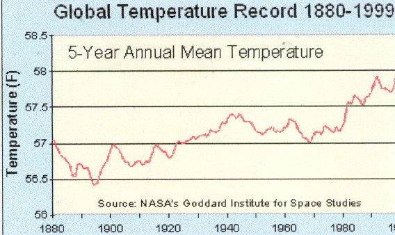

FINDINGS
POSSIBLE CAUSES OF THE FLOODING
There are combinations of factors that contribute to the reoccurrence of the severe flooding which attack Clonmel each year. These factors appear on a world - wide scale as well as a local one. Although Global Warming is a universal phenomenon, it has specific implications for the Clonmel area and both natural and human factors affect the average temperature of our planet. Scientists have now concluded that there is a ‘discernible human influence’ on climate. This means that the observed global warming is unlikely to be the result of natural variability and that human activities are at least partially responsible. The continued addition of greenhouse gases to the atmosphere is likely to raise the earth’s average temperature by several degrees in the next century, which will in turn raise the level of the sea. The global temperature record shows an average warming of about 1degree Fahrenheit over the past century. The ten warmest years have occurred since 1983, with seven of them since 1990. Recent evidence shows that the 20th century was the warmest in the last 1,000 years. The 1990’s were the warmest decade and 1998 was the single warmest year of the past millennium. As a result, future trends are quite pessimistic as global climatic change could also change the frequency and severity of inland flooding, particularly along rivers with some areas experiencing both increased flooding during winter and spring. As you can see, global warming is affecting every part of the world with serious repercussions being felt on a more localised scale.

<
Previous> <Index> <Next>